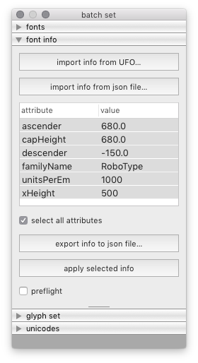
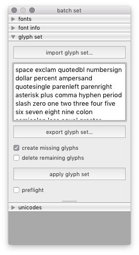

set¶
The Set tool is a batch tool to set font info, glyph set and unicodes in all target fonts.
 
font
Use the fonts panel to select on which fonts to set data.
font info
Use the font info panel to set new values for any font info attribute.
glyph set
Use the glyph set panel to apply a glyph set to the target fonts.
unicodes
Use the unicodes panel to assign unicodes for all glyphs in the fonts.
-
class
BatchSetDialog[source]¶ Bases:
hTools3.dialogs.batch.base.BatchDialogBaseA dialog to set several types of data in selected target fonts.
from hTools3.dialogs.batch.set import BatchSetDialog BatchSetDialog()
-
title= 'batch set'¶
-
key= 'com.hipertipo.hTools3.dialogs.batch.set'¶
-
fontInfo= {'OpenType': {'vhea Table': ['openTypeVheaVertTypoAscender', 'openTypeVheaVertTypoDescender', 'openTypeVheaVertTypoLineGap', 'openTypeVheaCaretSlopeRise', 'openTypeVheaCaretSlopeRun', 'openTypeVheaCaretOffset'], 'name Table': ['openTypeNamePreferredFamilyName', 'openTypeNamePreferredSubfamilyName', 'openTypeNameCompatibleFullName', 'openTypeNameWWSFamilyName', 'openTypeNameWWSSubfamilyName', 'openTypeNameVersion', 'openTypeNameUniqueID', 'openTypeNameDescription', 'openTypeNameSampleText', 'openTypeNameRecords'], 'hhea Table': ['openTypeHheaAscender', 'openTypeHheaDescender', 'openTypeHheaLineGap', 'openTypeHheaCaretSlopeRise', 'openTypeHheaCaretSlopeRun', 'openTypeHheaCaretOffset'], 'OS/2 Table': ['openTypeOS2WidthClass', 'openTypeOS2WeightClass', 'openTypeOS2Selection', 'openTypeOS2VendorID', 'openTypeOS2Type', 'openTypeOS2UnicodeRanges', 'openTypeOS2CodePageRanges', 'openTypeOS2TypoAscender', 'openTypeOS2TypoDescender', 'openTypeOS2TypoLineGap', 'openTypeOS2WinAscent', 'openTypeOS2WinDescent', 'openTypeOS2SubscriptXSize', 'openTypeOS2SubscriptYSize', 'openTypeOS2SubscriptXOffset', 'openTypeOS2SubscriptYOffset', 'openTypeOS2SuperscriptXSize', 'openTypeOS2SuperscriptYSize', 'openTypeOS2SuperscriptXOffset', 'openTypeOS2SuperscriptYOffset', 'openTypeOS2StrikeoutPosition', 'openTypeOS2StrikeoutSize'], 'Panose': ['openTypeOS2FamilyClass', 'openTypeOS2Panose'], 'head Table': ['openTypeHeadCreated', 'openTypeHeadFlags', 'openTypeHeadLowestRecPPEM'], 'gasp Table': ['openTypeGaspRangeRecords']}, 'PostScript': {'Hinting': ['postscriptBlueValues', 'postscriptOtherBlues', 'postscriptFamilyBlues', 'postscriptFamilyOtherBlues', 'postscriptStemSnapH', 'postscriptStemSnapV', 'postscriptBlueFuzz', 'postscriptBlueShift', 'postscriptBlueScale', 'postscriptForceBold'], 'Identification': ['postscriptFontName', 'postscriptFullName', 'postscriptWeightName', 'postscriptUniqueID'], 'Dimensions': ['postscriptSlantAngle', 'postscriptUnderlineThickness', 'postscriptUnderlinePosition', 'postscriptIsFixedPitch', 'postscriptDefaultWidthX', 'postscriptNominalWidthX'], 'Characters': ['postscriptDefaultCharacter', 'postscriptWindowsCharacterSet']}, 'General': {'Note': ['note'], 'Identification': ['familyName', 'styleName', 'styleMapFamilyName', 'styleMapStyleName', 'versionMajor', 'versionMinor', 'year'], 'Dimensions': ['unitsPerEm', 'descender', 'xHeight', 'capHeight', 'ascender', 'italicAngle'], 'Legal': ['copyright', 'trademark', 'openTypeNameLicense', 'openTypeNameLicenseURL'], 'Parties': ['openTypeNameDesigner', 'openTypeNameDesignerURL', 'openTypeNameManufacturer', 'openTypeNameManufacturerURL']}}¶
-
attrsIgnorePrefix= {'OpenType': {'vhea Table': 'openTypeVhea', 'name Table': 'openTypeName', 'hhea Table': 'openTypeHhea', 'OS/2 Table': 'openTypeOS2', 'Panose': 'openTypeOS2', 'head Table': 'openTypeHead', 'gasp Table': 'openType'}, 'PostScript': {'Hinting': 'postscript', 'Identification': 'postscript', 'Dimensions': 'postscript', 'Characters': 'postscript'}, 'General': {'Legal': 'openTypeName', 'Parties': 'openTypeName'}}¶
-
fontInfoData= {}¶
-
unicodesData= {}¶
-
selectedFontInfoSection¶ Get selected font info section.
-
selectedFontInfoSubSection¶ Get selected font info subsection.
-
selectedFontInfoAttribute¶ Get selected font info attribute.
-
selectedFontInfoDataAsDict¶ Get selected font info attributes and data as a dict.
-
selectedUnicodes¶ Get selected unicodes.
-